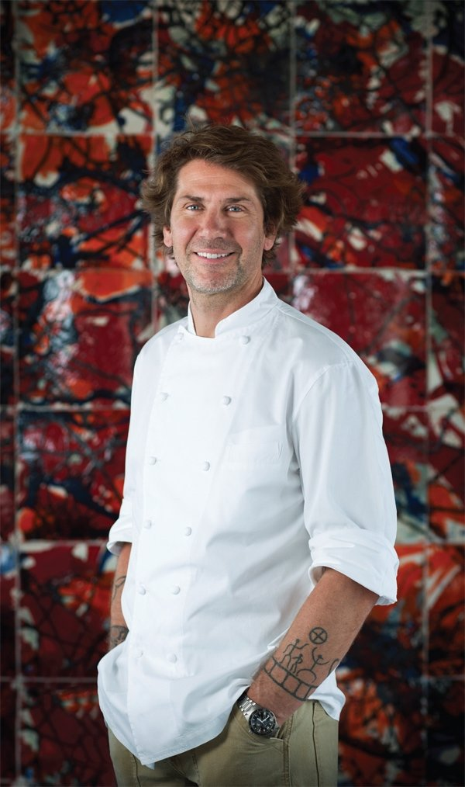

TURK
Chef: Fatih Tutak Location: Istanbul Awards: 2 Michelin Stars
Details: Fatih Tutak modernizes Turkish cuisine, blending traditional flavors with world-class presentations. The menu features locally sourced ingredients prepared with unique techniques, offering guests an unforgettable gastronomic experience. TURK holds the highest Michelin rating in Türkiye.
About Chef Fatih Tutak: Fatih Tutak honed his skills at world-renowned restaurants like Noma and The Dining Room, bringing his expertise back to Türkiye. Throughout his career, he has focused on fusing the roots of traditional cuisine with modern techniques. His vision is to make Turkish cuisine a global brand.
Menu and Flavors: The menu at TURK by Fatih Tutak is crafted entirely from locally sourced ingredients, with a strong emphasis on seasonality. Chef Tutak curates each dish to tell a story, using ingredients from across Anatolia.
Signature Dishes:
- A Tribute to Turkish Cuisine" cooked over embers
- A modernized version of "Çılbır," served with strained yogurt and pomegranate
- Handmade pasta made with ancient Anatolian wheat varieties
- A contemporary twist on the traditional "Künefe" dessert

MİKLA
Chef: Mehmet Gürs Location: Istanbul Awards: 1 Michelin Star
Details: Chef Mehmet Gürs combines Anatolian cuisine with Scandinavian influences in a creative approach. The menu features dishes crafted with ingredients sourced from local producers. Mikla's breathtaking Bosphorus view enhances the dining experience.
About Chef Mehmet Gürs: Chef Mehmet Gürs, a Turkish-Finnish culinary expert, has been a trailblazer in Türkiye’s fine dining scene for over two decades. Known for his innovative approach, Gürs trained in the United States and Scandinavia before returning to Türkiye to redefine its gastronomic landscape. His "New Anatolian Kitchen" concept combines the depth of Turkish culinary traditions with modern aesthetics.
Menu and Flavors: The menu at Mikla is a curated journey through Anatolia's culinary diversity, blending traditional ingredients and techniques with Scandinavian simplicity. Every dish reflects Chef Gürs' passion for storytelling through food.
Signature Dishes:
- Smoked raw beef: Served with dried eggplant, "tarhana" crisps, and bone marrow.
- Lamb tandır: Cooked with heirloom wheat pilaf and wild herbs.
- Quince dessert: A reinterpretation of a Turkish classic, combining quince, walnuts, and kaymak (clotted cream).
NEOLOKAL
Chef: Maksut Aşkar Location: Istanbul Awards: 1 Michelin Star and the Green Michelin Star
Details:Maksut Aşkar revitalizes Anatolia's nearly forgotten recipes, presenting them with a modern twist. The restaurant emphasizes sustainability and has been awarded the Green Michelin Star for its environmentally friendly practices.
About Chef Mehmet Gürs: Chef Mehmet Gürs, a Turkish-Finnish culinary expert, has been a trailblazer in Türkiye’s fine dining scene for over two decades. Known for his innovative approach, Gürs trained in the United States and Scandinavia before returning to Türkiye to redefine its gastronomic landscape. His "New Anatolian Kitchen" concept combines the depth of Turkish culinary traditions with modern aesthetics.
Menu and Flavors: Neolokal Menu offers a modern take on traditional Anatolian cuisine. Chef Maksut Aşkar revives ancient recipes using locally sourced, sustainable ingredients. The dishes are crafted with cutting-edge techniques while maintaining respect for Turkish culinary traditions.
Signature Dishes:
- Lamb Liver with Sumac Onions and Pomegranate Sauce
- Stuffed Zucchini Flowers with Yogurt and Dill Oil
- Modern Anatolian Meze Platter